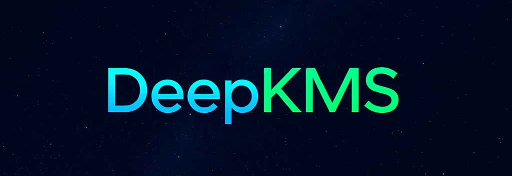
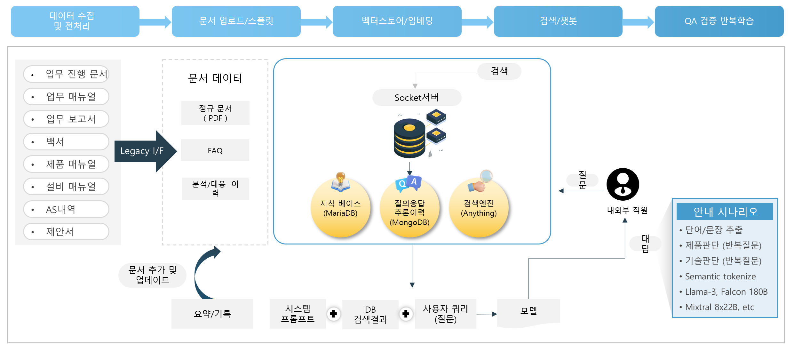
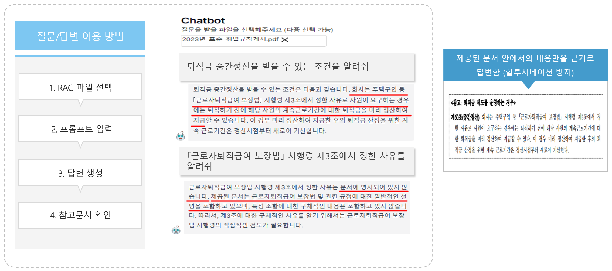

DeepKMS
주요 특징
RAG with LLM
RAG 방식은 기존 파인튜닝 방식보다 즉각적으로 신규문서나 데이터를 학습시킬 수 있어 신속한 고객 정보 갱신이 가능함
사용자 인터페이스 및 기능
Private 데이터 및 문서를 LLM에게 빠르게 업로드 후 학습하는 기능을 통해 LLM 기술을 로컬로 적극 수용하며 답변시 출처를 밝혀줌으로써 신뢰성을 확보하고 있습니다.
맞춤형 지식 제공
사용자의 학습 패턴, 과거 검색 기록 등을 분석하여 맞춤형 지식을 제공
지식검색
사용자는 정확한 키워드를 알지 않아도 자연어로 질문을 입력하여 원하는 지식을 찾을 수 있음
기술 차별성
| 구분 | DeepKMS | 타사 LLM |
|---|---|---|
| 답변형태 | 사용자 검색에서 사용자의 특성을 고려해 개인화된 답변을 추천함으로써 답변의 퀄리티 향상 | 사용자 검색에 임베딩에만 초점을 맞춤 → 사용자의 질문배경, 의도파악불가 |
| 환각 | AI가 적용된 인덱싱 기술로 할루시네이션 현상 현저히 저하 | 인덱싱이 제대로 되지 않은 문서에서 할루시네이션 발생 |
| 문서전처리 | 문맥을 파악하는 AI로 문서에 딱 맞는 청크사이즈 조절 | 일관된 청크 사이즈로 인한 검색실패, 그로인한 할루시네이션 발생 |
| 에이전트기능 | 텍스트 뿐만 아니라 여러 그래프를 만들고 일부 코딩이 가능한 LLM | 텍스트로만 답변이 제한되어 사용자 검색 경험이 완벽하지 않음 |
구현 프로세스
DeepKMS는 기관 내외부의 문서 수집, 전처리, RAG구현, 챗봇 구축 등의 작업을 통해 구축되며 LLMOPS로 기술적으로 관리됩니다.
문서&답변 생성 사례
사업보고서에서 최대주주의 변경일과 변동일을 구분하여 답변함
